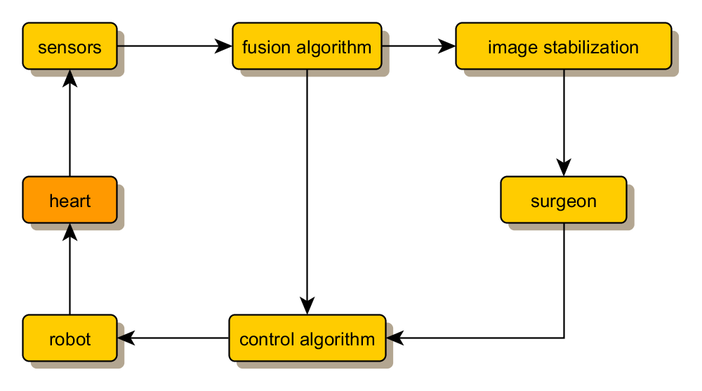
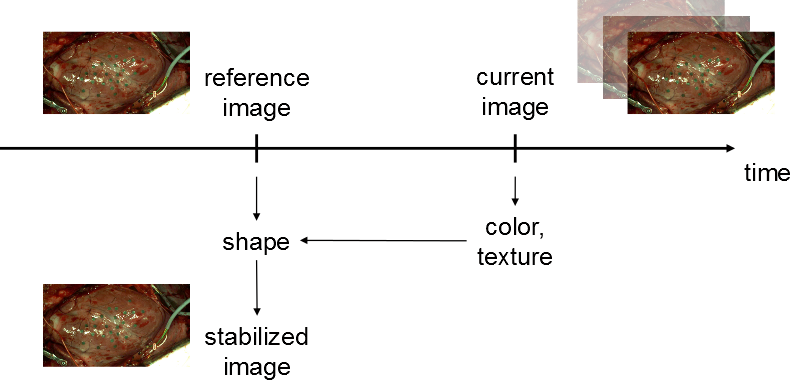
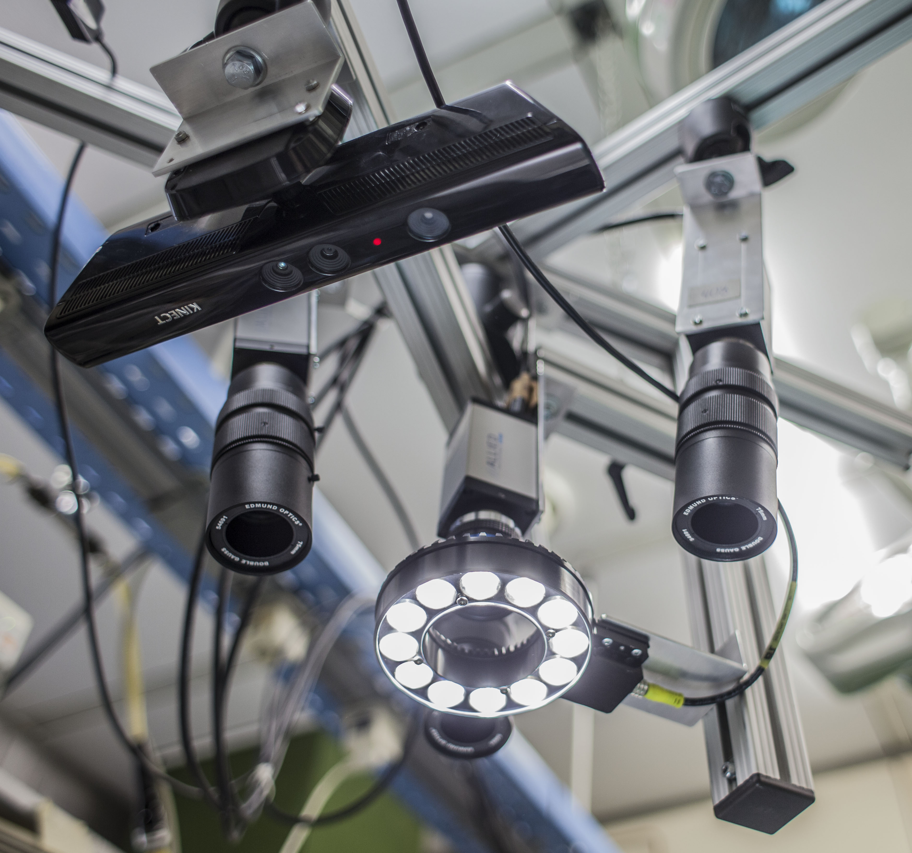
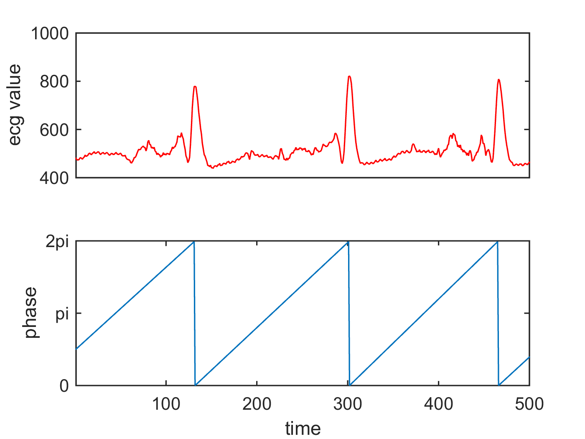
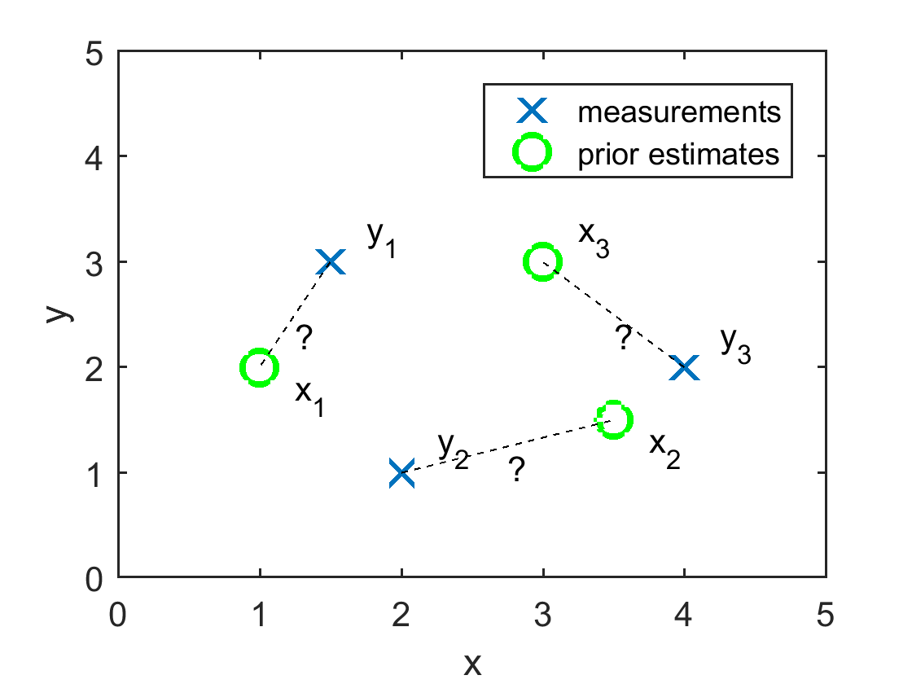
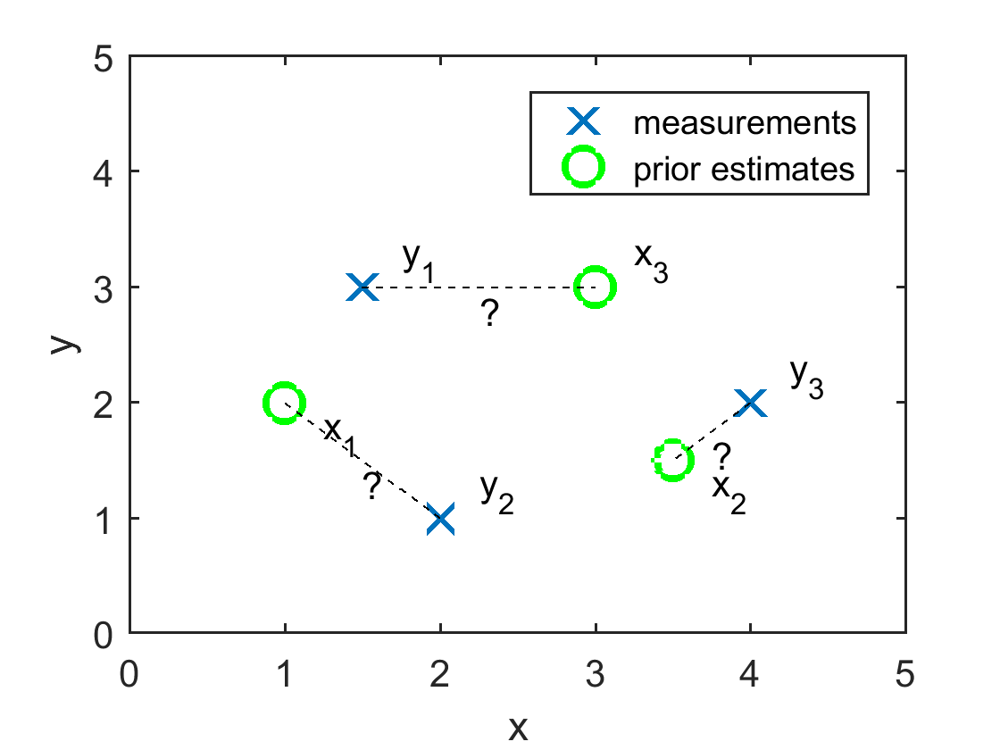

Beating heart surgery is very difficult to perform because the surgeon has to work on the heart while its surface is rapidly moving. A remote-controlled robot can be employed to automatically compensate for the motion of the beating heart. By showing a stabilized image to the surgeon, the illusion of operating on a still heart can be created.
The research on this problem was carried out in cooperation with the Heidelberg University Hospital as project T2 of the Research Training Group 1126 on “Intelligent Surgery” GRK 1126). An article on my work has appeared in the APR Newsletter 2015.

Image Stabilization
The goal of image stabilization consist in creating a video stream of the beating heart where the movement of the heart has been removed. However, changes to texture as caused by manipulation by the surgeon are supposed to be retained. Thus, we want to combine the shape of the heart from a certain reference frame with the current texture information.

I have published several papers on this problem, which focus on different issues.
- 2D interpolation (Kurz & Hanebeck, 2012)
- 2D and 3D interpolation (Kurz & Hanebeck, 2014)
- Evaluation methodology (Kurz et al., 2014)
This video illustrates some of my results.
Application of Kinect and IMU Sensors
In literature, most methods for beating heart tracking rely on cameras exclusively. Occasionally, other sensors, such as ECG or a blood pressure sensor are used. A key to achieving accurate, reliable, and robust tracking is the fusion of information from multiple sensors that complement each other and that can compensate for each others weaknesses.
Motivated by the availability of novel sensors, I investigated the applicability of small inertial measurement units (IMUs) contained in a single chip to the problem of beating heart tracking. Furthermore, I performed experiments with a Microsoft Kinect camera based on the structured light measurement principle. Both types of sensors showed promising results (Kurz et al., 2013).

Heart Surface Reconstruction
For the purpose of beating heart tracking as well as three-dimensional image stabilization, an accurate 3D reconstruction of the heart surface is essential. However, this is a fairly tricky problem due to the constant movement and elastic deformation of the heart surface. Thus, classical algorithms that assume a rigid surface are not applicable. Furthermore, it is desirable to combine information from color cameras (which is usually fairly accurate, but not very dense, and can be affected by specular reflections) and information from depth cameras (which tends to be less accurate, but more dense and more robust with respect to specular reflections). For this reason, I proposed a novel algorithm on recursive surface tracking using a combination of depth and color information (Kurz & Hanebeck, 2013), (Kurz & Hanebeck, 2014).

Heart Phase Estimation
The idea of heart phase estimation is to condense the state of a complex dynamic system such as the beating heart into a single quantity, the phase. The intuitive meaning of the phase is the answer to the question how much of the current heart beat has already passed. Because phase is a periodic quantity, I employ an estimator based on Directional Statistics (Kurz & Hanebeck, 2015).
Multiple-target Marker Tracking
In order to simplify tracking of the heart surface, we place artificial landmarks on the beating heart. These landmarks can easily be located using computer vision algorithms due to their distinct color. However, all artificial landmarks look identical, so they cannot be distinguished. This creates an assignment problem as it is common in the field of multiple target tracking.
 
To address this problem, I devised a multiple target tracking method using an algorithm based on the Kernel-SME idea originally proposed by Marcus Baum (Kurz et al., 2014).
References
- Kurz, G., & Hanebeck, U. D. (2012, November). Image Stabilization with Model-Based Tracking for Beating Heart Surgery. 11. Jahrestagung Der Deutschen Gesellschaft Für Computer- Und Roboterassistierte Chirurgie (CURAC12).
- Kurz, G., & Hanebeck, U. D. (2014, July). 2D and 3D Image Stabilization for Robotic Beating Heart Surgery. Proceedings of the 17th International Conference on Information Fusion (Fusion 2014).
- Kurz, G., Foley, G., Hegedus, P., Szabo, G., & Hanebeck, U. D. (2014, September). Evaluation of Image Stabilization Methods in Robotic Beating Heart Surgery. 13. Jahrestagung Der Deutschen Gesellschaft Für Computer- Und Roboterassistierte Chirurgie (CURAC14).
- Kurz, G., Hegedus, P., Szabo, G., & Hanebeck, U. D. (2013, November). Experimental Evaluation of Kinect and Inertial Sensors for Beating Heart Tracking. 12. Jahrestagung Der Deutschen Gesellschaft Für Computer- Und Roboterassistierte Chirurgie (CURAC13).
- Kurz, G., & Hanebeck, U. D. (2013, July). Recursive Fusion of Noisy Depth and Position Measurements for Surface Reconstruction. Proceedings of the 16th International Conference on Information Fusion (Fusion 2013).
- Kurz, G., & Hanebeck, U. D. (2014). Dynamic Surface Reconstruction by Recursive Fusion of Depth and Position Measurements. Journal of Advances in Information Fusion, 9(1), 13–26. http://confcats_isif.s3.amazonaws.com/web-files/journals/entries/427_1_art_6_19271%5B1%5D.pdf
- Kurz, G., & Hanebeck, U. D. (2015, July). Heart Phase Estimation Using Directional Statistics for Robotic Beating Heart Surgery. Proceedings of the 18th International Conference on Information Fusion (Fusion 2015).
- Kurz, G., Baum, M., & Hanebeck, U. D. (2014, June). Real-time Kernel-based Multiple Target Tracking for Robotic Beating Heart Surgery. Proceedings of the Eighth IEEE Sensor Array and Multichannel Signal Processing Workshop (SAM 2014).